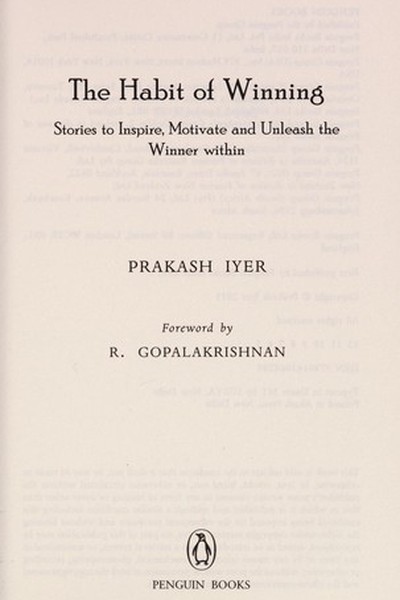
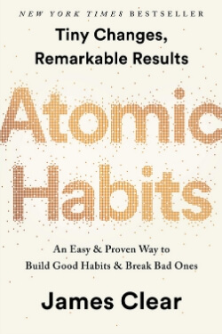
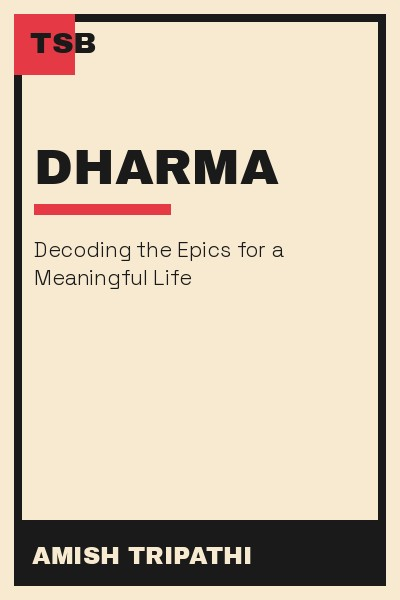
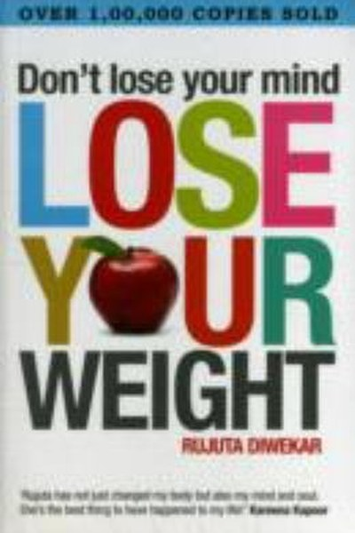
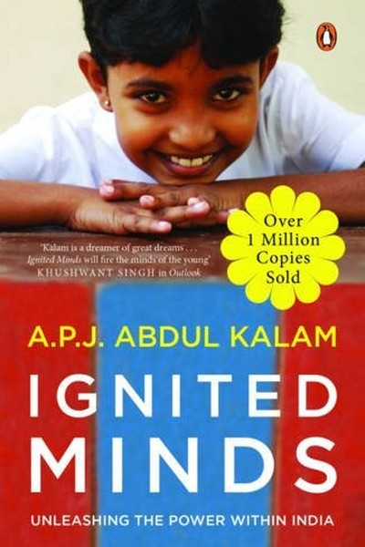

Library › Books like How to Stop Worrying and Start Living
10 Books Like How to Stop Worrying and Start Living That Hit the Same Nerve
You finished How to Stop Worrying and Start Living by Dale Carnegie and want the same energy: Live in day-tight compartments, accept the worst, then improve on it - worry is a habit, and habits have off-s… Here are 10 more that scratch the same itch, each with a free chapter-by-chapter breakdown, key lessons and action steps on this shelf.

The Habit of Winning Prakash Iyer shows through Indian success stories that winning is a set of repeatable habits - practice, attitude, effort and finishing. READ THE FREE BREAKDOWN →
Atomic Habits Getting 1% better every day compounds into a completely different life. Habits are the compound interest of self-improvement. READ THE FREE BREAKDOWN →
Dharma Amish Tripathi reads the Ramayana and Mahabharata as practical guides to living - what duty means, when desire is good, and why context decides right and wrong. READ THE FREE BREAKDOWN →
Don't Lose Your Mind, Lose Your Weight Rujuta Diwekar's commonsense Indian guide: eat local and seasonal, never skip meals, train consistently, sleep well - weight loss is a habit problem, not a diet problem. READ THE FREE BREAKDOWN →
Ignited Minds A.P.J. Abdul Kalam's message to young India - five missions for a developed nation, and the truth that ignited minds, not resources, build the future. READ THE FREE BREAKDOWN →Every summary is free: lessons, examples, action steps, audio in your language.